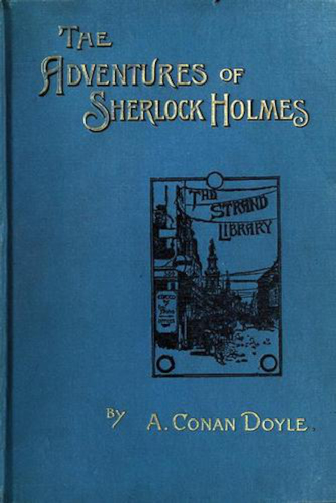

The Adventures of Sherlock Holmes
مغامرات شيرلوك هولمز
الأدب
ملك عام
ترجمة كاملة
المجموعة الأولى لمغامرات شيرلوك هولمز، القصص التي أسست القصة البوليسية الحديثة: فضيحة في بوهيميا و«المرأة»، عصبة الرءوس الحمراء، لغز وادي بوسكومب، الشريط المرقّط، وغيرها — المحقق الذي يقرأ العالم من بقايا النشارة والرماد، وواطسون الذي يروي. اثنتا عشرة قصة كاملة بترجمة أدبية.
| المؤلف | آرثر كونان دويل — Arthur Conan Doyle |
| سنة النص الأصلي | ١٨٩٢ |
| كلمات المصدر (الإنجليزية) | ١٠٤٥٢٩ |
| كلمات الترجمة (العربية) | ٨٣٧٠٩ |
| مقاطع الترجمة المدققة | ٥٥ |
| مدة القراءة التقريبية | ≈ ١٩٠٠ دقيقة |
الترخيص والحقوق: النص الأصلي (١٨٩٢) في الملك العام. هذه الترجمة العربية منشورة بإذن حر. المصدر: gutenberg.org/ebooks/1661